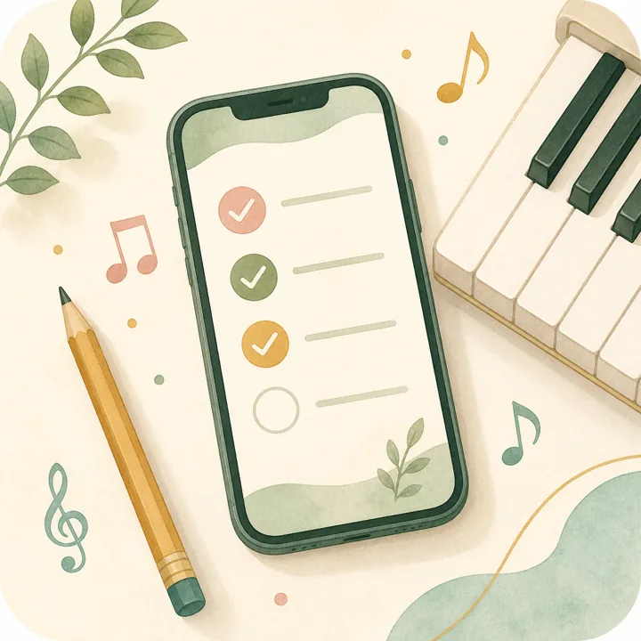

今日のページ
今日の練習と予定を確認中
きょうやること
練習課題を確認中
ひとつずつ、やってみよう。
7日スタンプ
あつめよう。
0/7
Practice
個人練習
始めたら時間を計測して、終わったら練習記録に残します。
0:00実測
練習時間
まだ開始していません
こどもモード
0/1
きょうやること
やることを入れると、ここに出ます。
Lesson
レッスン予定
レッスン、本番、申込締切をカレンダーで確認します。
今月の予定
日付を押すと、その日の予定を追加できます。
予定を入れる
レッスン、準備、申込、本番を登録します
きろく
ひいて、みる
ボタンをおします。
動画は大事な1回だけ。
0:00
録音・動画一覧
録音と動画はこの端末内に保存されます。重要なものは端末にも保存してください。
Notebook
ピアノート
練習、録音、先生コメントを1冊のノートとして残します。
-最新点
ノート履歴
練習、録音、先生コメントを日付順にまとめます
点数推移
いまの点を見ます
子どもプロフィール
未登録
端末内データ診断
このスマホに保存されている内容
データ管理
端末内保存なので、機種変更前はバックアップしてください。
ホーム画面に追加
iPhoneはSafariの共有ボタンから「ホーム画面に追加」。AndroidはChromeのメニューから「アプリをインストール」または「ホーム画面に追加」を選びます。

試用者へ送る案内
URLと注意点をまとめてコピー
試用チェックリスト
確認状況を集計中
試用サマリー
販売前に直すポイントを確認
バックアップ手順
1設定の「バックアップを書き出す」を押す
2保存されたJSONファイルをスマホ内やクラウドに保管
3録音は録音カードの「端末に保存」から個別に保存
試用フィードバック
使ってもらった感想を端末内に記録
初回案内
試用者に説明するときは、最初の案内をもう一度表示できます。